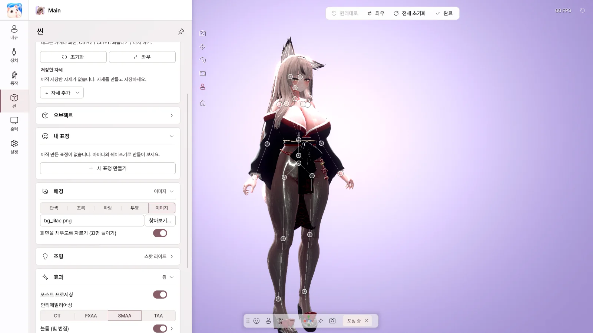
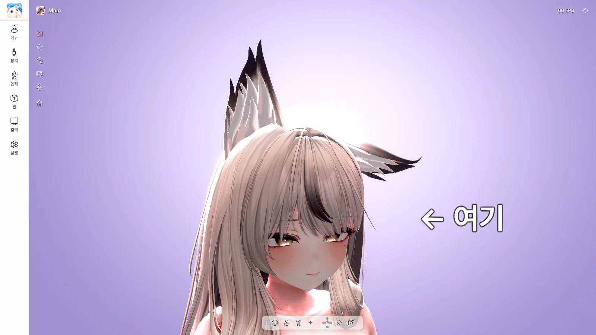

11. 포징 · 오브젝트 · 표정
| 기능 | 에디션 |
|---|---|
| 포징 | Pro |
| 오브젝트 | Pro |
| 화면 공유 추가 소스 | Pro |
| 내 표정 | Basic · Pro |
| 자동 표정 | Basic · Pro |
포징

씬 › 포징 › 포징 모드를 켜면 뼈를 직접 움직여 자세를 만들 수 있습니다.
- 뼈를 클릭해서 고르고, 끌어서 움직입니다. 손이나 발을 끌면 팔 · 다리 전체가 따라옵니다.
- 링을 끌면 회전합니다.
- 좌우 — 왼쪽과 오른쪽 자세를 뒤집거나 복사합니다.
- + 자세 추가 › 현재 자세 저장으로 저장하고, 아바타 메뉴의 자세 카드에서 바로 켭니다.
- Unity에서 만든
.anim파일도 불러올 수 있습니다.
포징 모드를 끄기 전에 자세를 저장해 두세요.
오브젝트

씬 › 오브젝트 › + 오브젝트 추가로 텍스트, 이미지, 도형, 3D 모델을 놓습니다.
- 붙일 곳을 머리나 손으로 하면 아바타와 함께 움직입니다.
- 텍스트는 더블클릭해서 바로 고칩니다.
- 3D 모델은 Unity의 Curious Bobby → Prop Exporter로
.vprop파일을 만들어 씁니다.
화면 공유 추가 소스
화면 공유에 창이나 모니터를 더 겹칠 수 있습니다. 채팅 창이나 음악 플레이어를 함께 보여 줄 때 사용합니다.
내 표정
아바타의 쉐이프키로 나만의 표정을 만듭니다.
- 새 표정 만들기를 누릅니다.
- 쉐이프키를 검색해서 + 로 추가하고 세기를 맞춥니다.
- 저장하면 아바타 메뉴의 내 표정 카드에서 눌러서 켤 수 있습니다.
자동 표정
웃거나 놀라면 정해 둔 표정이 자동으로 나옵니다. 동작 › 자동 표정에서 켜고, 미소 · 놀람 · 윙크 같은 표정마다 보여 줄 표정을 연결합니다.